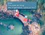

|
When
you enter the frog pond area of any Qu's Marsh, Quina asks to spend
some time catching frogs. Quina must be in your party for this to
occur. If you agree to let him/her catch frogs, you can control
Quina as s/he runs around the pond attempting to catch the frogs
that leap onto the ground out of the water. There's no real strategy
to this; you just need to be swift.
| As
Quina catches more and more frogs, Quale appears occasionally
and congratulates Quina on his/her progress. The master Qu then
bestows items upon Quina as rewards for catching frogs. If you
can catch 99 frogs, Quale challenges your party to a battle.The
trick to this side quest is to always leave a male and a female
frog in the pond. Otherwise, it will take an incredibly long
time for the pond to repopulate with frogs. The spawning rate
is also much faster if you leave the Golden Frog with a male
and a female frog. |
 |
One
strategy for chasing the frogs is to learn the differences in color.
Female frogs are usually a much brighter color than males, while baby
frogs are smaller and more olive-toned. You may want to change the
Contrast on your television or monitor to distinguish more easily.
Avoid chasing baby frogs, because they will grow up to become adults
and will be much easier to catch then.
Quina
can learn Blue Magic abilities by eating Sahagins or Gigan Toads
in Qu's Marsh. You can learn the reliable Frog Drop ability by eating
a Gigan Toad. Frog Drop has a 100% success rate and the strength
of this ability is determined in part by how many frogs Quina has
caught. The damage follows this formula:
| Quina's
Level x (amount of frogs) x 100 = HP Damage
|
For
example: If Quina is at level 50 and s/he has caught 100 frogs,
Frog Drop will cause 5000 HP damage.
Frog
Capture Prizes
 SPECIAL
ITEMS SPECIAL
ITEMS
KEYWORD: QUINFR7 |
|
#
Frogs
|
Prize
|
|
2
Frogs
|
Ore
|
|
5
Frogs
|
Ether
|
|
9
Frogs
|
Silk
Robe
|
|
15
Frogs
|
Elixir
|
|
23
Frogs
|
Silver
Fork
|
|
33
Frogs
|
Bistro
Fork
|
|
45
Frogs
|
Battle
Boots
|
|
99
Frogs
|
Gastro
Fork
|
|
){kind=link}